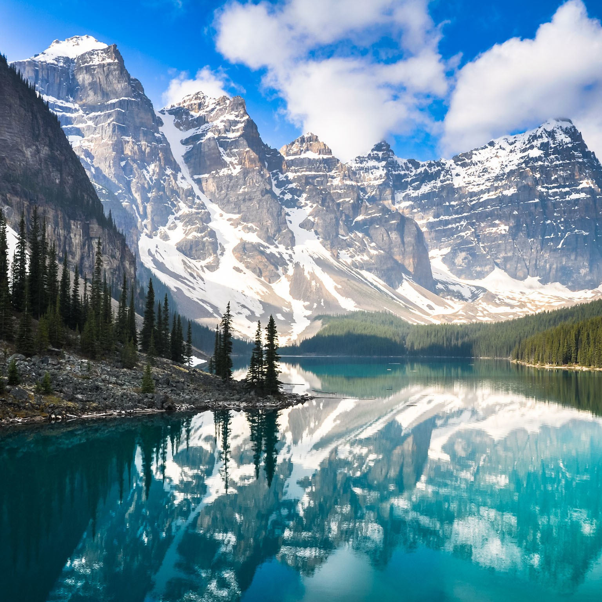
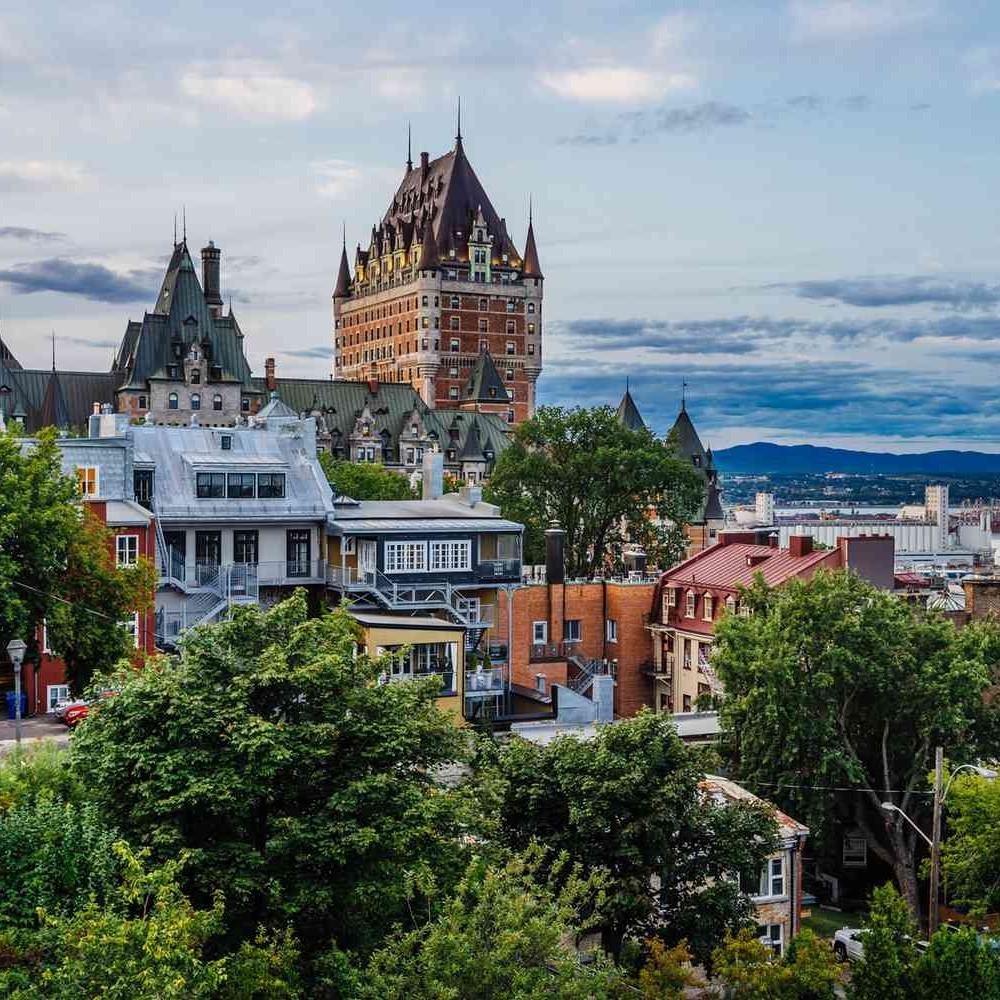

Canada
From Banff's Majestic Rockies to Quebec City's Historic Charms
My Canadian odyssey commenced in the heart of Toronto, a bustling metropolis where modernity meets nature. The towering CN Tower and the Royal Ontario Museum welcomed me to the city's vibrant culture and history. Exploring the colorful neighborhoods and indulging in an array of world cuisines introduced me to Toronto's multicultural tapestry.
 No journey through Canada would be complete without a pilgrimage to Banff National Park in Alberta. Hiking alongside the pristine shores of Lake Louise, I was spellbound by the emerald waters cradled amidst snow-capped peaks. The Banff Gondola ride provided panoramic views of the Canadian Rockies, while my encounters with native wildlife deepened my connection to the park's wilderness.
Heading west to Vancouver, I found myself immersed in coastal elegance. Cycling along the Stanley Park seawall, I was treated to breathtaking vistas of the Pacific Ocean and the lush forested trails. Exploring the rich heritage of indigenous cultures at Brockton Point's totem poles opened a window into the region's deep history.
My travels led me to Quebec City, where I stepped back in time within the confines of Old Quebec. Cobblestone streets, centuries-old architecture, and the iconic Château Frontenac transported me to a European era. Dining in charming bistros and strolling along the historic city walls allowed me to savor the unique blend of history and culture that defines Quebec City.
 Visiting Niagara Falls, I stood in awe of this awe-inspiring natural wonder. Aboard the Maid of the Mist, I ventured close to the thunderous falls, feeling the mist on my skin as I marveled at the sheer power of nature. Witnessing the falls illuminated in a cascade of colors during the evening was a visual feast for the senses.
My journey continued to Montreal, a city known for its cultural fusion and culinary prowess. A visit to the Montreal Museum of Fine Arts and the Notre-Dame Basilica allowed me to appreciate the city's artistic and spiritual treasures. Exploring the lively neighborhoods of Mile End and Le Plateau-Mont-Royal exposed me to Montreal's vibrant street art, eclectic boutiques, and an array of global cuisines.
Heading northwest to Jasper National Park, I embarked on a journey through a wilderness wonderland. Hiking through pristine landscapes, I encountered turquoise lakes, towering glaciers, and abundant wildlife. The serene beauty of Maligne Lake and the iconic Spirit Island left an indelible mark on my soul. Stargazing in the Dark Sky Preserve provided a celestial experience like no other.
As I reflect on my journey across Canada, I am captivated by the country's enduring beauty and cultural diversity. From the majestic allure of Banff to Vancouver's coastal elegance, Quebec City's historical charm to the grandeur of Niagara Falls, Montreal's vibrant culture to Jasper National Park's untamed wilderness, Canada's diversity is its greatest treasure.
Join me in future travels as I continue to explore the captivating regions of the Americas, each offering its own unique blend of beauty and cultural richness. Until next time, keep your spirit of adventure alive, and may your travels lead you to the wonders of the world. Farewell, fellow explorers!